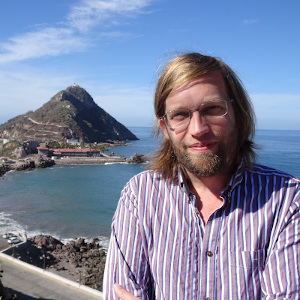

Research interests
I am a Professor of Geochronology at the School of Natural and Built Environment at Queen's University Belfast. I am Director of the 14CHRONO Centre for Climate, the Environment and Chronology. My background is in palaeoecology (PhD, University of Amsterdam, The Netherlands, 2003), and I am interested in using statistics to answer palaeo-ecological questions.
I am working on:
- Radiocarbon calibration
- Age-depth modelling
- Statistical/ecological interpretation of proxy archives

Google Scholar page
ORCID